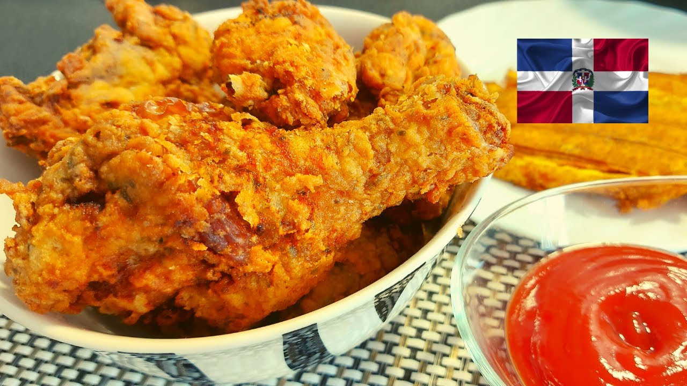

Recetas de Pica Pollos
Descripción:
¡El Pica Pollo es uno de los platos más queridos y emblemáticos de la República Dominicana!
El Pica Pollo es un plato de trozos de pollo frito sazonados que se sirve tradicionalmente con tostones (plátanos verdes fritos y majados).
Ingredientes:
- Pollo
- Ajo
- Orégano seco
- Naranja agria o limón
- Sal y pimienta
- Sazón líquido
- Harina de trigo
Pasos:
- Limpiar y cortar el pollo
- Sazonar el pollo y marinar
- Hacer el rebozado (pasar los trozos de pollo por harina)
- Freir el pollo
- Escurrir el aceite y servir al instante